知床～稚内
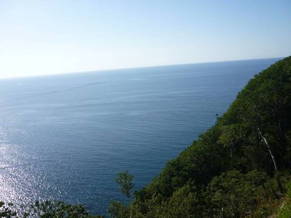
知床峠からウトロ側に走っていく。再びオホーツク海に出た。
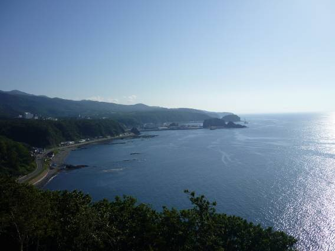
ウトロ側の海岸線。ここら一帯はもう世界遺産の指定区域である。冬には流氷が押し寄せるという。

ウトロにあるオロンコ岩という巨岩。左の方についている道からてっぺんまで登ることができる。

オロンコ岩のてっぺんまで登ってみた。最近の運動不足がたたってか、息が切れてしまった。この写真、何か生き物のように見えないだろうか？ゴジラ岩という名称がついている。
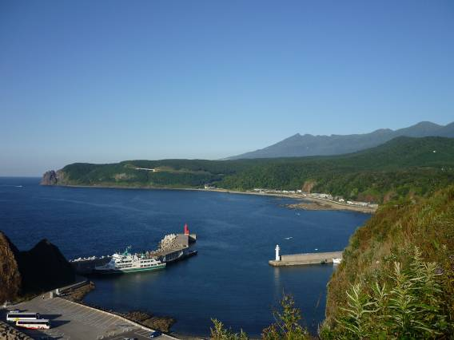
知床先端部までは見ることはできない。先端は、遊覧船で見に行くか、または歩いて向かうかだ。歩きでいく場合、クマ対策は必須。
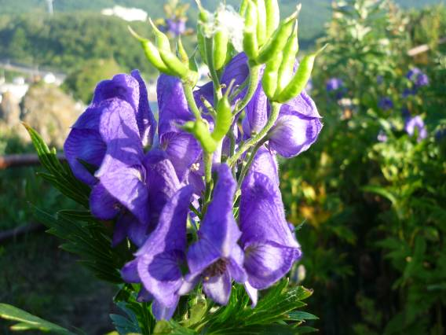
オロンコ岩のてっぺんでトリカブトが自生していた。
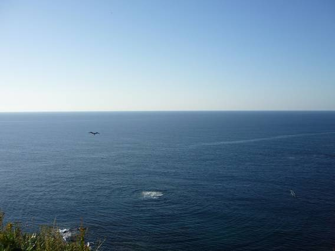
ゴジラが出てくるのかー！？と思ったが何も出ては来なかった・・・。しかし何かがいそうだ。
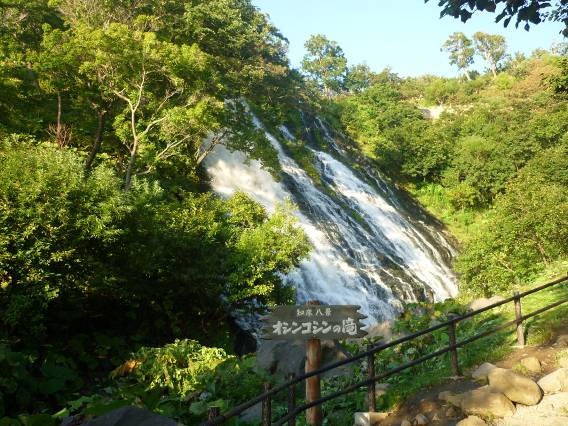
オシンコシンの滝。あまり大きくはない。

斜里町付近の道の駅。鉄道の駅も併設してある。
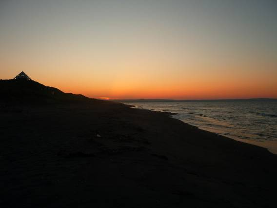
オホーツクの夕焼け。
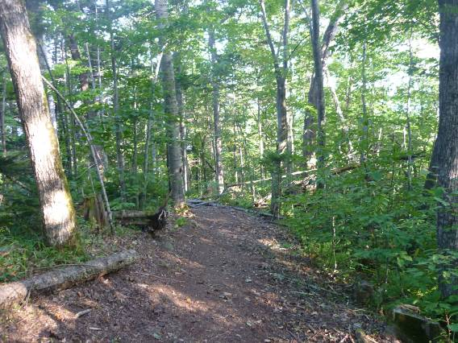
サロマ湖の道の駅から、展望台を目指して歩く。40分ほどの登山。しんどかった。

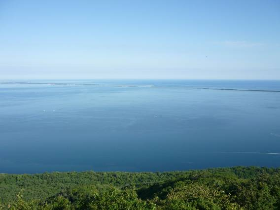

努力の甲斐あって展望台に到着。絶景が広がる。

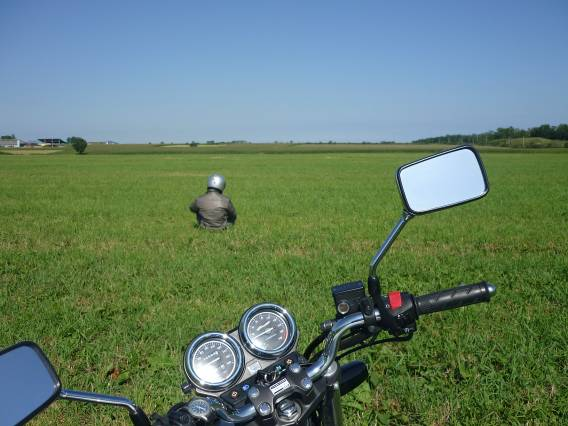
紋別周辺も牧草地が広がる。一人旅だったので寂しい写真しか撮れない。

オホーツクの海はどこまで行っても青々としていた。冬は一面流氷に覆われるのだろう。見てみたい。

道の駅雄武で買ったイカ天とカニ天。

北海道では一足早くコスモスの季節。
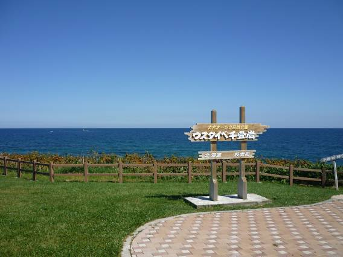

ウスタイベ千畳岩と呼ばれる磯。
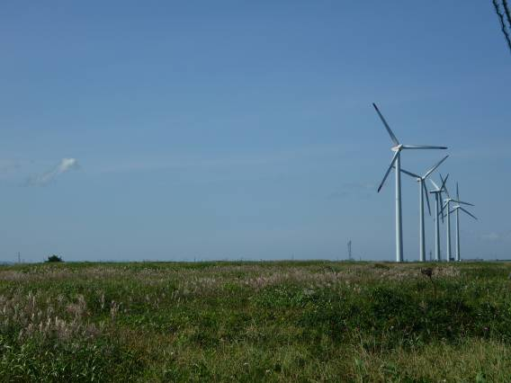
どこまでも草原が続いている。


美しいベニヤ原生花園。北海道では北部の海岸はたいてい砂浜海岸の陸側に原生花園が広がっているようだ。花の開花ピークはもう過ぎているようで、少し寂しげな雰囲気が漂っていた。そして途中、クマが出没したとの情報を知らせる看板を発見。もしこんなところで突然出くわしたらもう終わりだ。
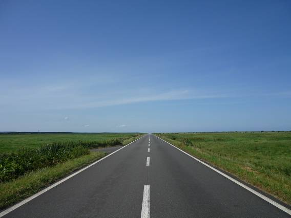
かねてから計画し、憧れだったエサヌカ線。交通量は皆無に等しく、まるで空に道路が溶けていくようだった。両側に広がっているのは原生花園や牧草地である。

思わずこういうこともやってみたくなる。
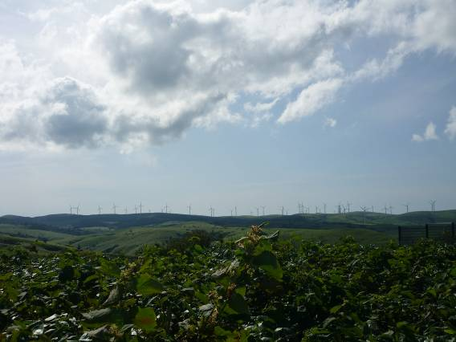
宗谷丘陵に広がるウィンドファーム。全部で54機もあるというからすごい。

宗谷岬の灯台だろうか。丘陵地が美しい。

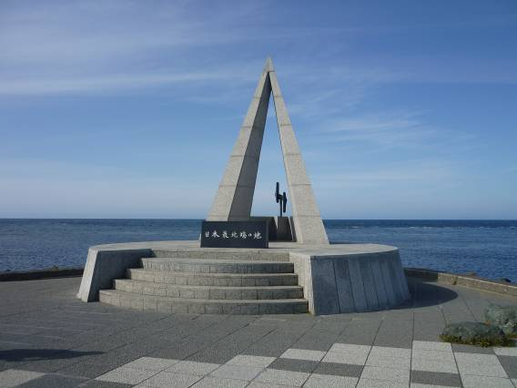
ついに、日本最北端の地に至れり。北緯45度。ずいぶん北のほうまで来たと思うのだが、まだまだ北には樺太など広大な北極圏が広がっているのだろう。僕はなぜか、北の大地にものすごく惹かれてしまう。どれだけ寒くても、人は普通に生活している。人間のすごさを感じさせる。

宗谷岬から北方を望む。かすかに樺太の陸地が確認できた。

昔宗谷海峡でアメリカ軍と日本軍が海戦を繰り広げたそうだ。


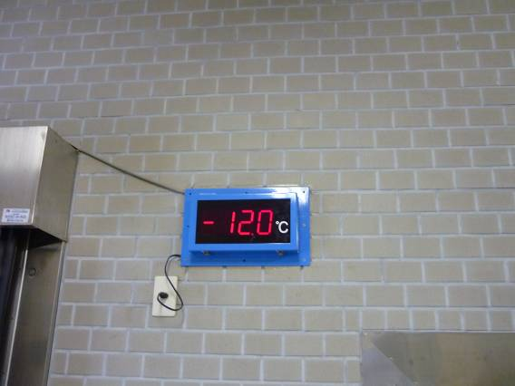
宗谷岬には流氷記念館があり、ここではマイナス12℃の冷凍展示室があった。すべて剥製だ。
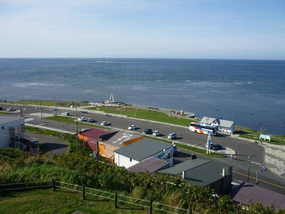
少し丘をあがってみる。

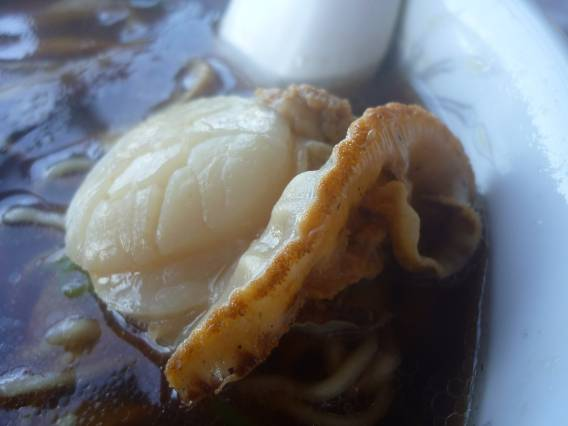
最北端で食べたのはラーメン。ドでかいホタテが入っていた。